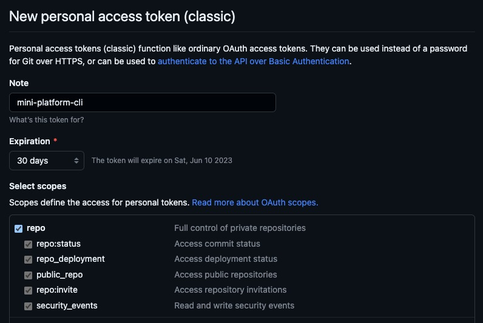

Introduction
Creating Github Organization
We will use an Org to simulate a real world (or aproximatelly one).
You can see how to create a new organization on Github here
Using go-github
In this page I created the command minictl create application --name and now I will use the go-github project to create our repository.
Personal Access Token
To get access to Github, was necessary to create a Personal Access Token on Github. To get the Personal Access Token, you need to follow this official Github tutorial.
Is necessary to select those scopes to get access to create an repository:

Code to create the repo
I created a minimal code to create the repository, is required to configure two environment variables, the first one is MINI_PLATFORM_ORG and the second one is MINI_PLATFORM_GH_TOKEN.
MINI_PLATFORM_ORGis the organization's name.MINI_PLATFORM_GH_TOKENis your Personal Access Token.
package repo
import (
"context"
"fmt"
"github.com/google/go-github/v52/github"
"golang.org/x/oauth2"
"log"
"os"
)
type Repo interface {
Create(name string)
}
type repo struct {
Client *github.Client
}
func (r *repo) Create(name string) {
ctx := context.Background()
org := os.Getenv("MINI_PLATFORM_ORG")
repository, response, err := r.Client.Repositories.Create(ctx, org, &github.Repository{
Name: &name,
})
if err != nil {
log.Fatalln("error while creating repository", err.Error())
}
if response.StatusCode == 201 {
log.Println(fmt.Sprintf(`
Hey! Your repository is ready
Get the repository: git clone %s`, *repository.CloneURL))
} else {
log.Fatalln("Sorry! was not to possible creating your repository")
}
}
func NewRepo() Repo {
personalAccessToken := os.Getenv("MINI_PLATFORM_GH_TOKEN")
ctx := context.Background()
ts := oauth2.StaticTokenSource(
&oauth2.Token{AccessToken: personalAccessToken})
tc := oauth2.NewClient(ctx, ts)
client := github.NewClient(tc)
return &repo{
Client: client,
}
}
After this implementation, was necessary to execute it when minictl create application --name is called:
func NewCreateApplicationCommand() *cobra.Command {
var createApplicationCmd = &cobra.Command{
Use: "application",
Run: func(cmd *cobra.Command, args []string) {
log.Println(fmt.Sprintf("Creating application with name '%s'", applicationName))
newRepo := repo.NewRepo()
newRepo.Create(applicationName)
},
}
createApplicationCmd.PersistentFlags().StringVar(&applicationName, "name", "", "--name=application-name")
_ = createApplicationCmd.MarkPersistentFlagRequired("name")
return createApplicationCmd
}
Using the minictl
It will be a step-by-step to create a repository with minictl.
- Clone the repository:
- Build the CLI:
- Set all required variables
MINI_PLATFORM_ORGandMINI_PLATFORM_GH_TOKENand execute the CLI:
The output shoul looks like it:
2023/05/13 11:05:21 Creating application with name 'team-api'
2023/05/13 11:05:22
Hey! Your repository is ready
Get the repository: git clone https://github.com/mini-platform/team-api.git
There is no validation yet, but if you create a valid repository name, it works well!
Contribute
If you want to collabare with me, create an issue and open a pull request here. The commit related with this page is here.